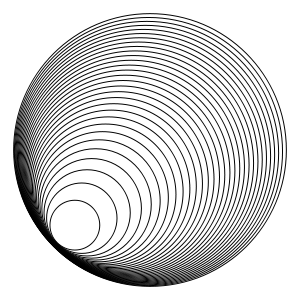

RGeom is a Ruby-driven geometrically-aware mathematical diagram tool. The specification environment is a cartesian plane, not pixel-coordinates, and implicit construction means you rarely enter coordinates anyway.
The images below were generated by RGeom to have a width of 300px. The width in RGeom units (think of a cartesian plane) is shown below the image for your information.
This document is divided into logical segments, beginning with core concepts and interesting demonstrations, and continuing with in-depth examples of RGeom's various capabilities (triangles, circles, ...).
Both the code and this example file are in their relative infancy. You can find the code at github .
The next three examples will demonstrate how RGeom zooms in to the diagram.
The triangle in this example is created near the origin and has a base of 5 units (the default).
|
Width: 5.0 units |
triangle() |
The triangle is the same (default) one as above, but this time we have a circle in a distant location. The image is therefore "zoomed out" and the triangle appears much smaller.
|
Width: 10.0 units |
triangle() circle(:centre => p(8,9), :radius => 2) |
Once more the image must zoom out to include the segment in the top left.
|
Width: 24.0 units |
triangle() circle(:centre => p(8,9), :radius => 2) points :A => p(-14,20), :B => p(-9,15) segment(:AB) |
Here we create a triangle, extend its base, and join the extended point to the apex.
|
Width: 10.5 units |
triangle(:ABC, :equilateral) segment(:AB).extend(2.1, :E) segment(:CE) |
The <b>Shape.generate</b> function allows us to build any number of shapes, each based on the previous one.
In this case, the hypotenuse of one triangle forms the base of the next one.
The hypotenuses have length sqrt(2), sqrt(3), sqrt(4), ...
|
Width: 6.9 units |
first = triangle(:right_angle => :first, :base => 3, :height => 1) generate(10, first) { |tn| base = tn.hypotenuse.reverse triangle(:right_angle => :first, :base => base, :height => 1) } Triangle[-1].hypotenuse.length == Math.sqrt(19) # true |
A group of circles defined along a linear path, with radii desisgned to reach just beyond the origin.
|

Width: 16.2 units |
(0..30).each do |d| centre = Point[sqrt(d), sqrt(d)] radius = sqrt(2.2*d) circle(:centre => centre, :radius => radius) end |
The right-angle mark is achieved using a square, which is not nice, but it's all we've got at the moment.
The order in which you specify the vertices of a square is important. Like a triangle, it is constructed clockwise.
|
Width: 10.0 units |
triangle :ABC, :right_angle => :A, :base => 4, :height => 3 square :base => :BA square :base => :CB square :base => :AC square :A___, :side => 0.4 # right-angle mark |
Pythagoras's Theorem is stated with squares on the hypotenuse, but any similar shape will do. Here we use semicircles.
|
Width: 6.0 units |
triangle :ABC, :right_angle => :A, :base => 4, :height => 3 semicircle :diameter => :BA semicircle :diameter => :CB semicircle :diameter => :AC square :A___, :side => 0.4 # right-angle mark |
We can create all sorts of triangles using natural specifications.
The vertices of a triangle (any shape, really) are constructed in anti-clockwise order. So if A and B are defined, then triangle(:ABC) will be different from triangle(:BAC).
|
Width: 15.7 units |
points :A => p(1,4), :B => p(6,3) triangle(:ABC, :isosceles, :side => 8) triangle(:CBD, :equilateral) triangle(:DBE, :scalene, :angles => [110.d, 19.d]) points :X => p(10,10) triangle(:XYZ, :sides => [5.2,4.1,7.9]) triangle(:YEW, :right_angle => :W, :height => 1.5) # dot(:A, :B, :C, :D, :E, :X, :Y, :Z, :label) |
When demonstrating the properties of a triangle, it's sufficient to use the default scalene triangle construction. (It's a 5-6-7 triangle.)
Here we construct segments from each vertex to the midpoint of the opposite side. We do this explicitly, although there are (or should be) Triangle methods to do this for us.
|
Width: 5.0 units |
triangle(:ABC) points :M => midpoint(:AB), :N => midpoint(:BC), :O => midpoint(:CA) segment(:AN) segment(:BO) segment(:CM) |
We construct the medians of a triangle again, but this time we don't name the midpoints of each side.
|
Width: 10.0 units |
triangle(:ABC, :base => 10, :angles => [51.d, 73.d]) segment(:start => :A, :end => midpoint(:BC)) segment(:start => :B, :end => midpoint(:AC)) segment(:start => :C, :end => midpoint(:AB)) |
Generated by html-demo/generate.rb on 2009-11-21 at 16:12:54 (AUS Eastern Daylight Time).